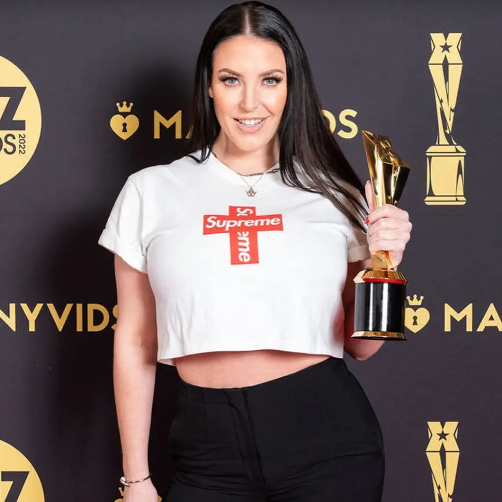
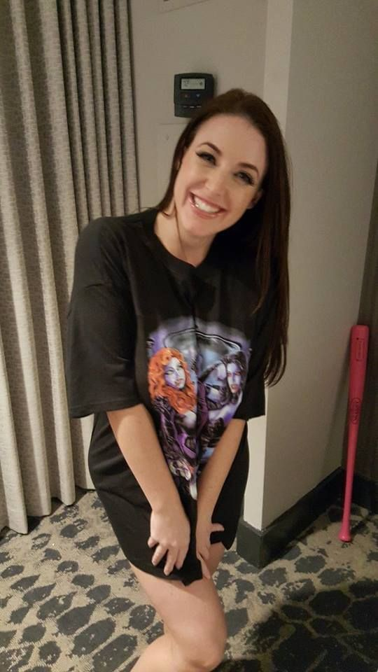

{kind=link}

More Related ❱- Stage Name Angela White
- Real Name Angela Gabrielle White
- Born Sydney, New South Wales, Australia
- Age year
- Citizenship Australian
- Occupation Actress | Director | Model
- Protfolio https://www.angelawhitestore.com/
Karenjit Kaur Vohra (born May 13, 1981), known by her stage name Sunny Leone, is a Canadian-Indian-American former pornographic actress.Now working as an actress and model in the Indian and American film industries. She was born in Canada to an Indian Sikh family. She has Canadian and American citizenship. Her pet name is Karen. She was named Penthouse Pet of the Year in 2003, was a contract performer for Vivid Entertainment, and was named by Maxim as one of the 12 top porn stars in 2010.
She has played roles in independent mainstream events, films, and television series. Her first mainstream appearance was in 2005, when she worked as a red carpet reporter for the MTV Video Music Awards on MTV India. In 2011, she participated in the Indian reality television series Bigg Boss. She also has hosted the Indian reality show Splitsvilla.
In 2012, she made her Bollywood debut in Pooja Bhatt's erotic thriller Jism 2 (2012) and shifted her focus to mainstream acting which was followed up with Jackpot (2013), Ragini MMS 2 (2014), Ek Paheli Leela (2015), Tera Intezaar (2017), and the Malayalam film Madhura Raja in 2019.
Apart from her acting career, she has been part of activism campaigns including the Rock 'n' Roll Los Angeles Half-Marathon to raise money for the American Cancer Society and has also posed for a People for the Ethical Treatment of Animals (PETA) ad campaign with a rescued dog, encouraging pet owners to have their cats and dogs spayed and neutered.
Karenjit Kaur Vohra was born on May 13, 1981, in Sarnia, Ontario, to Sikh Indian Punjabi parents. As a young girl, she was a self-described tomboy, very athletic and played street hockey with the boys.
Although the family was Sikh, her parents enrolled her in Catholic school as it was felt to be unsafe for her to go to public school. When she was 13, her family moved to Fort Gratiot, Michigan, then to Lake Forest, California, a year later, fulfilling her grandparents' dream that the family be together in one place. She had her first kiss at 11, lost her virginity at 16 with a basketball player, and discovered her bisexuality at 18.
In 2004, Leone was part of No More Bush Girls, in which she and several other popular adult actresses shaved off their pubic hair in protest of the George W. Bush presidency.[152] In May 2008, she shot a promotional video for Declare Yourself, a nonprofit, nonpartisan voter registration campaign targeting 18- to 29-year-olds.[153] She indicated that Barack Obama would be her choice in the 2008 U.S. presidential election, primarily because she felt he was more business friendly to the adult industry than his opponent John McCain.[154] She also released a public service announcement on behalf of the ASACP, urging adult website webmasters to protect their sites from children by having an RTA label on it.[citation needed]
In 2013, Leone posed for a PETA ad campaign, encouraging dog and cat owners to have their pets spayed and neutered. In an interview for PETA India, Leone said, "I believe that every single dog should be spayed and neutered. You don't want to continue the cycle of homeless dogs or cats. And spaying and neutering also keeps them healthy."[155] PETA named her their "Person of the Year" in 2016.
In June 2006, Leone became an American citizen,[17] but stated she planned to remain a dual citizen of Canada.[157] On April 14, 2012, she announced that she was now a resident of India,[158][159] explaining in an interview to The New Indian Express that she was an Overseas Citizen of India for which she was eligible because her parents lived in India. She applied for it prior to filming Jism 2.
Leone is left handed.
Leone has a strong interest in health and fitness and has been featured in several mainstream fitness publications. Leone has modelled fitness clothing for the sports brand Fantasy Fitness[165] and shared that she stays shape by working out as much as she can despite her busy schedule, commenting in Men's Fitness magazine, "I try to eat very healthy – lots of vegetables, drinking milk every day."
A 2008 Eye Weekly article reported that "Leone does her best to maintain a link to Sikh traditions, even if more in theory than in practice. But she's unlikely to disavow her career path due to religion" and that Leone said "Girls will leave the industry claiming that they found God. Well, the fact is, God has always been with them the entire time."[167] In a 2010 interview, she said
It's a community-based religion. You walk into a temple and you're greeted with the utmost respect... But, just like any religion it doesn't want you to shoot adult material. I mean, I grew up going to temple every Sunday. When my parents found out they knew my personality which was very independent. Even if they tried to stop me or tried to steer me the right way they would have lost their daughter. I'm too headstrong. And it wasn't a plan. It just happened and my career and everything just kept getting bigger and bigger.
A police first information report was filed against Leone in May 2015 after a woman at Mumbai, India, complained that Leone's website, sunnyleone.com, was destroying the Indian culture. Thane police's cyber cell at Ramnagar booked her for sections 292, 292A, 294, which could have landed her a term in jail, a fine, or both. Senior police inspector JK Sawant stated, "We cannot block the website, but will ask the operator to remove objectionable content."
In the 2017 new year, a pro-Kannada group Rakshana Vedike Yuva Sene protested against the event Sunny Night in Bengaluru NYE 2018 in Bangalore, Karnataka, at which Leone was to perform, stating that she should have been banned from the event due to her pornographic past. The protesters threatened a mass suicide, and Karnataka home minister Ramalinga Reddy denied her permission to appear at the event.

In 2018, a social activist lodged a complaint against Leone at the Nazarethpet police station in Chennai. He stated that the actress was promoting pornography, which is illegal in India, and that this would harm Indian culture and its moral fabric.
Producer and distributor Bharat Patel has accused Leone of not returning a signing fee which she had taken to do a special dance number for his film Patel Ki Punjabi Shaadi after her role was cancelled.